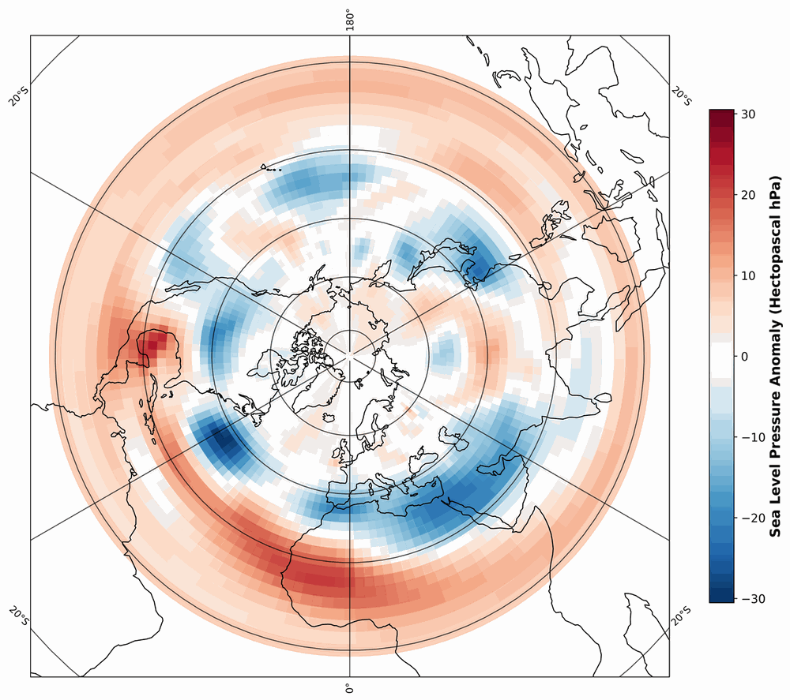
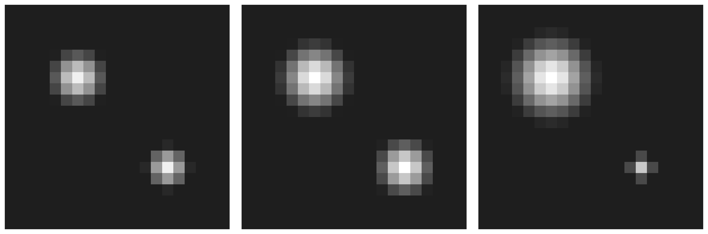
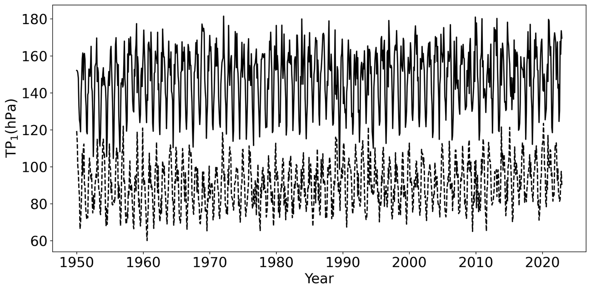
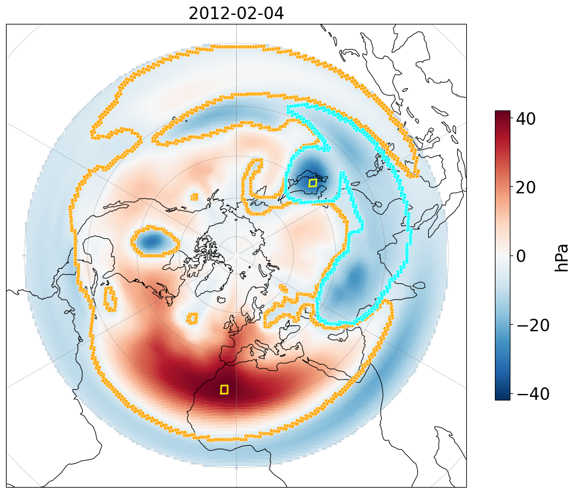
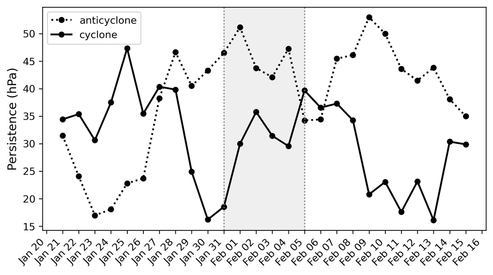
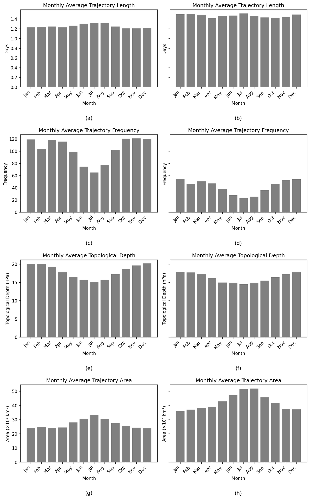

Topological Detection and Tracking of Cyclones and Anticyclones
A weather map is a landscape: low-pressure cyclones carve valleys, high-pressure anticyclones raise ridges. This work reads that landscape with algebraic topology — detecting storms and blocking highs as loops in the pressure field, and following them through time without any hand-tuned feature-tracking heuristics.
We apply persistent homology to 76 years of daily sea-level pressure (SLP) anomalies over the North Atlantic (22.5°N–70°N, 80°W–50°E; 1948–2023). Treating each daily anomaly field as a grayscale image on a grid, we build cubical complexes and compute sublevel- and superlevel-set filtrations. Persistent degree-1 features — 1-holes — correspond to coherent atmospheric structures: the sublevel filtration captures 1-anticyclones, the superlevel filtration captures 1-cyclones.

From pressure fields to persistence diagrams
The pipeline turns each day of atmospheric data into a topological summary, then stitches the summaries into trajectories.
Anomalies on a grid
Daily SLP anomalies are computed by subtracting, for each calendar day, its 76-year mean — removing the seasonal trend and exposing transient structure.
Cubical complexes & filtrations
Each anomaly field is treated as intensities on a square grid, from which we build a cubical complex. Sweeping the pressure threshold upward (sublevel) or downward (superlevel) produces a filtration of the field.
Persistent 1-holes
Persistent homology records when loops are born and when they fill in. Long-lived 1-holes in the sublevel filtration are 1-anticyclones; in the superlevel filtration they are 1-cyclones. Persistence — measured in hPa — quantifies each structure's intensity.
Tracking by optimal matching
Consecutive persistence diagrams are linked by the optimal matching underlying the Wasserstein distance. Features with persistence below 10 hPa are discarded, and matches whose death squares are more than 1,000 km apart are rejected — leaving physically meaningful trajectories.

Watch the method run. Each frame pairs the anomaly map (left) with its persistence diagram (right); the tracked feature is the orange star far above the diagonal, and its representative loop is drawn on the map.
The blocking episode behind the exceptional 2012 snowfall over Rome. The tracked 1-anticyclone intensifies from 31 January, peaks at ~43 hPa persistence on 4 February, and weakens by 5 February — visible as the orange star pulling away from, then falling back toward, the diagonal.
The same machinery applied to the superlevel-set filtration follows a winter 1-cyclone across three consecutive days, with its representative loop migrating across the basin.
Cyclones dominate the topology of the North Atlantic
Across all 76 years, total persistence, lifetime, and feature counts show strong winter maxima and summer minima — and cyclonic structures are consistently more persistent, more numerous, and longer-lived than anticyclonic ones, in line with the climatological dominance of the wintertime Icelandic Low.

Blocking events have a topological signature
Atmospheric blocking — the quasi-stationary highs behind the February 2012 cold spell and the August 2003 European heatwave — appears not as more anticyclonic features, but as the emergence of a few exceptionally persistent, spatially extensive 1-anticyclones, coexisting with many smaller, dynamically active 1-cyclones. Maximum persistence peaks at the mature stage of both events, while the Wasserstein distance between consecutive diagrams alternates between phases of topological stability and rapid reorganization.



If you use this method or build on these results, please cite the preprint: